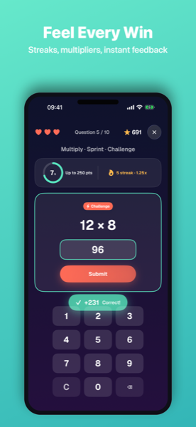
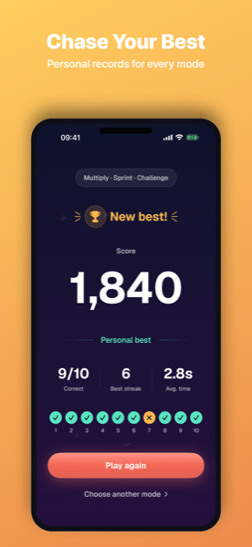
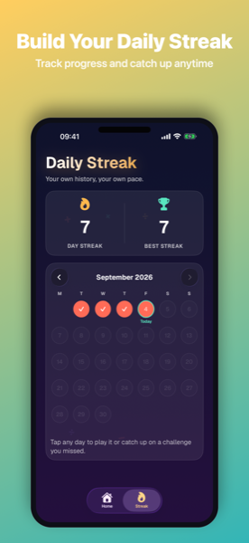

Number Circuit
Sprint or survive fast mental-math challenges.





About
Number Circuit is a fast, focused mental-math trainer built for short, repeatable sessions — pick an operation, pick a difficulty, and go.
Two ways to play: Sprint is a tight 10-question run against the clock, with a big bonus for a perfect run. Survival has no finish line — the clock gets a little less forgiving with every question.
Four operations, three difficulties: addition, subtraction, multiplication, and division, each with Warm-up, Focused, and Challenge tiers.
Scoring: speed bonuses, streak multipliers up to 2x, Challenge questions worth extra points, and a +500 bonus for a perfect Sprint run.
Three hearts, not one strike: a wrong answer or timeout costs a heart and shows the correct answer, so a mistake teaches you something instead of ending the run.
Daily Challenge & history: one personalized challenge per day built from your own recent play, plus a Daily Streak history you can revisit. Game Center is optional for leaderboards. Everything else stays on your device — no ads, analytics, or tracking.
Frequently asked questions
Do I need an account to play?
No. Number Circuit works fully offline with no sign-up. Game Center is optional and only needed if you want to submit scores to leaderboards.
Does Number Circuit collect my data or show ads?
No. There are no ads, analytics, or tracking SDKs. Scores, best runs, and Daily Challenge history are stored locally on your device.
What happens if I get an answer wrong?
You lose one of three hearts and see the correct answer, then the run continues — a mistake doesn't end things immediately.
What's the difference between Sprint and Survival?
Sprint is a fixed 10-question run against the clock. Survival has no finish line, and the timer gets a little tighter with every question.
What is the Daily Challenge?
One personalized challenge per day, built from your own recent play history. Your Daily Streak and history are tracked on the Streak tab.